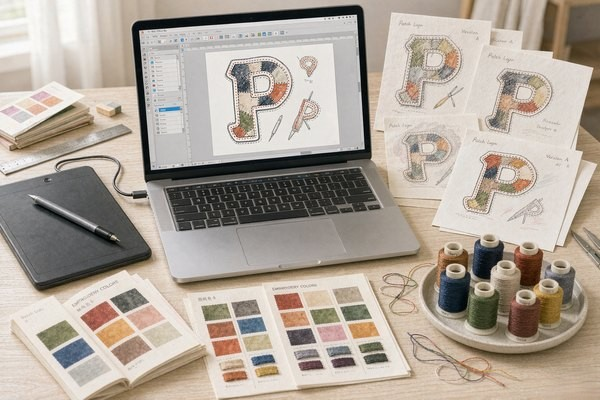
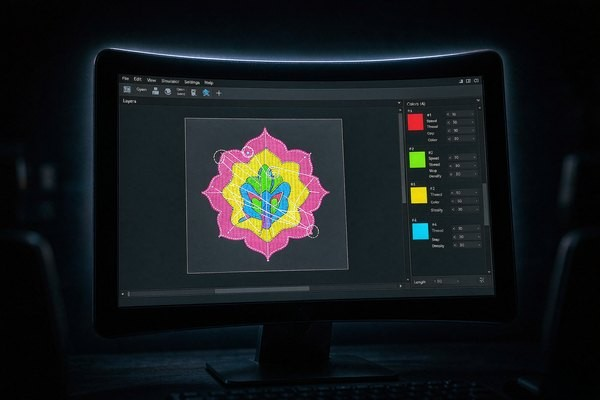
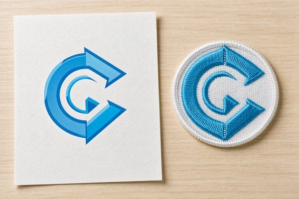

Patch Design Software: Free & Paid Options Compared
Search for patch design software and you get two answers mixed together — apps that draw artwork, and apps that convert artwork into machine stitches. They are different jobs with different tools, and buying the wrong category is the most expensive mistake in this space. This guide splits the field cleanly: free and paid drawing tools, real digitizing packages, honest price tags, the file formats that matter, and a straight answer on when to skip the software entirely and let your patch maker handle the conversion.

Two Different Jobs: Designing vs Digitizing
A patch starts as artwork — shapes, colors, text — and becomes a stitch file that tells an embroidery machine where every needle lands, in what order, with which thread. These are different disciplines. Design software thinks in pixels and vectors; digitizing software thinks in stitch types, direction, density, and pull compensation, because thread is a physical material that shifts as it sews.
Here is the decision that saves you money: you almost always need the first kind and rarely need the second. A clean vector file of your patch design is exactly what a patch manufacturer wants — we digitize in-house as part of production, and most reputable makers do the same. Buying a $1,000+ digitizing suite to prepare files for a manufacturer is buying a machine the factory already owns. Digitizing software earns its price only if you run your own embroidery machines or digitize commercially.
So the software field splits into three tiers: drawing tools (everyone), digitizing tools (production people), and the in-between clutter that markets itself as both. Let's walk them in order.
Drawing Tools: Where Your Artwork Gets Made
Vector output is the goal — SVG, AI, EPS or print-quality PDF — because vectors scale to any patch size without the blur that wrecks small text. The reasoning behind that requirement is in our logo conversion guide.
| Tool | Price | Strengths for Patch Work | Watch Out For |
|---|---|---|---|
| Inkscape | Free | Full vector toolkit, SVG native, huge tutorial base | UI feels dated; no CMYK print workflow |
| Adobe Illustrator | ~$23/month | Industry standard, best pen tool, brand-file compatibility | Subscription cost; overkill for one patch |
| Affinity Designer | ~$70 one-time | Pro-grade, no subscription, fast on modest hardware | Smaller ecosystem, fewer embroidery-adjacent plugins |
| Canva | Free / ~$13/month | Templates, instant results, zero learning curve | Raster output unless you pay; generic-looking shapes |
| GIMP | Free | Raster editing, mockups, photo-based patch previews | Wrong tool for logos — pixels, not vectors |
For most readers, Inkscape is the honest recommendation. It costs nothing, exports clean SVG, and handles every technique a patch design needs: flat color fills (embroidery cannot do gradients anyway), bold strokes, outline text converted to paths. The learning curve is a weekend, not a month. Illustrator wins if you already live in it or your brand assets ship as .AI files; otherwise the subscription buys you nothing for this job. Affinity Designer is the value play for freelancers who design patches regularly and resent subscriptions. Canva is fine for a quick mockup — just export at high resolution and expect a professional to redraw it as vectors if it goes to production.
Whatever you choose, design with the physics in mind from our text legibility guide: 4 mm minimum letter height for embroidery, 0.35–0.5 mm minimum stroke width, and flat colors with clear contrast. A design file that respects those limits before digitizing saves a full revision round.
Digitizing Software: The Real Ones, Priced Honestly
Digitizing converts your vector into a stitch file (DST, PES, JEF and cousins): stitch type per region, stitch angle, density, underlay, thread order. The digitizing craft is what separates a crisp patch from a puckered one — direction controls how light hits satin stitches, density controls stiffness, underlay stops the fabric from swallowing small lettering.

| Software | Price (rough) | Who It's Actually For |
|---|---|---|
| SewArt | ~$75 one-time | Hobbyists; auto-digitizing experiments on simple art |
| Hatch Embroidery (Digitizer) | ~$700–1,300 | Serious home studios; best balance of power and usability |
| Embird | ~$150 base + modules | Tinkerers; modular pricing, strong editing tools |
| Wilcom EmbroideryStudio | $1,500–10,000+ | Production shops; the industry benchmark |
| Ink/Stitch | Free | Open-source experimenters; Inkscape extension, manual and quirky |
The honest warning sits with the cheap end. Auto-digitizing is a trap for patch work. SewArt and similar tools promise one-click conversion, and for a two-color circle badge they deliver something passable. For anything with text, curves, or three colors, auto output ignores stitch direction, buries underlay, and produces files that sew as lumpy fuzz. A human digitizer makes dozens of judgment calls per design — the machine makes none. That is why our free digitizing includes a human review of every file, and why "I already have a DST file" does not always save money: a bad stitch file costs more to fix than a clean vector costs to digitize from scratch.
Ink/Stitch deserves a mention for the curious: it is free, actively developed, and genuinely capable in patient hands — but expect manual work on every object and a debugging mindset. It teaches you how stitching actually behaves, which is knowledge worth having even if a professional digitizes your final files.
So Which One Do You Actually Need?
Match your situation to a row:
| Your Situation | Buy / Use This | Skip This |
|---|---|---|
| Ordering patches from a manufacturer (most people) | Inkscape or Affinity Designer for artwork | Digitizing suites — the factory digitizes free |
| Freelance patch designer selling artwork | Affinity Designer or Illustrator | Digitizing unless clients ask for stitch files |
| Own an embroidery machine, sew in-house | Hatch or Embird | Canva, basic raster editors |
| Commercial digitizer / production shop | Wilcom EmbroideryStudio | Nothing — this is the endgame |
| Just curious, small budget | Inkscape + Ink/Stitch | Expensive suites bought on impulse |

Notice a pattern: every path from artwork to finished patch passes through a digitizing step, and only one path requires you to own the digitizing tool. Since we digitize every order free — and send a proof within 12 hours so you can see the stitch translation before production — the software budget for most patch buyers is zero. Spend the money on better artwork instead: the size and spacing rules in our size guide and the geometry tips in our shapes guide will move the finished result more than any software upgrade.
File Formats: What to Send and What to Expect Back
Format confusion generates a lot of back-and-forth, so here is the short version. To your patch maker, send: SVG, AI, EPS, or PDF (vector, best), or a high-resolution PNG (300 dpi at final patch size, acceptable). Include Pantone or thread color notes and the final patch size. What comes back from digitizing is a machine file — DST is the Tajima standard every commercial machine reads, PES serves home Brother machines, JEF covers Janome. You do not need to open these files; the proof render and the physical sample are what you judge.
One request we make of every customer: convert all text to outlines (paths) before sending vector files. A font that lives only on your laptop becomes a rectangle soup on ours. Outlined text also protects letterforms from substitution — the spacing rules from our legibility guide survive transit exactly as you drew them.
Frequently Asked Questions (FAQ)
Q1: What is the best free patch design software?
Inkscape, without a close second. It is a full vector editor that exports clean SVG — exactly what patch manufacturers want — and it costs nothing. Pair it with the free Ink/Stitch extension if you want to experiment with stitch files yourself, though for ordering patches the vector artwork alone is enough.
Q2: Do I need to buy embroidery digitizing software to order patches?
No. Reputable patch manufacturers digitize in-house as part of production — ours is free with every order and includes a 12-hour proof. Digitizing software only makes sense if you run your own embroidery machines or sell digitizing as a service.
Q3: Is auto-digitizing software good enough for patches?
Only for the simplest flat badges. Auto-digitizing ignores stitch direction, underlay, and pull compensation — the three things that separate a crisp patch from puckered fuzz. Designs with text or multiple colors need human digitizing, whether in-house at your manufacturer or by a professional.
Q4: What file format should I send for a custom patch?
Vector first: SVG, AI, EPS, or PDF with text converted to outlines. A 300-dpi PNG at final patch size works if vector is impossible. Add Pantone or thread color references and the target size, and the digitizer has everything needed for a first-pass proof.
Q5: Can I design a patch in Canva?
You can mock one up, but Canva's free tier exports raster files with generic templates — fine for communicating an idea, not for production. If Canva is where your skills live, design it there, export at high resolution, and expect your patch maker to redraw it as clean vectors before digitizing.
Conclusion: Buy Artwork Skills, Not Factory Tools
The patch design software market blurs two industries on purpose, because digitizing suites are expensive and hobbyists searching for "patch software" make easy customers. The clean answer: design in a vector tool — Inkscape if you are starting from zero, Affinity or Illustrator if you are serious — and let the patch factory translate your artwork into stitches. You get professional digitizing free, a proof to judge before anything is sewn, and a software bill of exactly nothing.
Send us your vector file (or a sketch — we redraw those too) and we will return a digitized proof within 12 hours, no minimum order. Request a free quote and let the software do what it is actually good at.